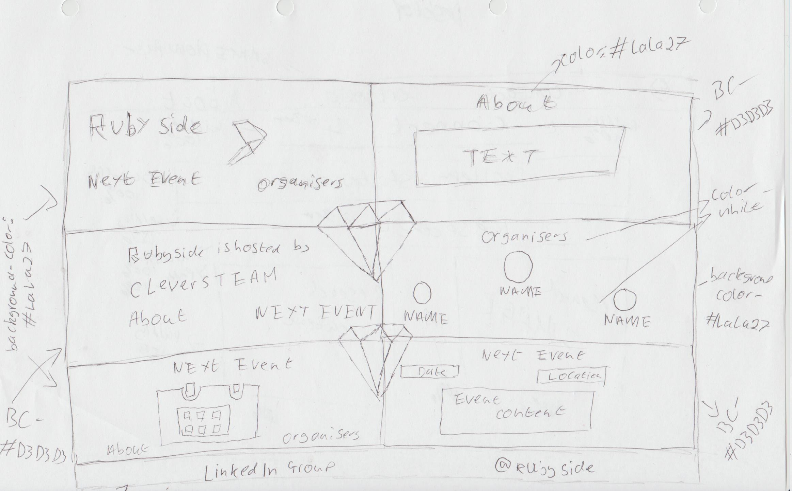

RubySide
The problem was that the Rubyside website was it looked outdated and so needed redesigning to bring it up to current user interface trends. The goal of the website was to display highlight who they are, the key member and advertise up and coming events.
Research
Research was carried out to gather an understanding of what the client wanted from the website. The other research carried out was desk research to gather inspiration from other ruby based website to be able to design an idea for RubySide.
Design

Low-fidelity prototypes were used to create rough sketches of different parts of the design, for example, the rubies and the layout for each section of the website. High-fidelity prototypes were created in a photo editor and code to produce the final design. The website needed three section, the first a section explain who they are, a section with the organiser with links to their LinkedIn accounts and final next event where they can book a place through Eventbrite. The design also needed a footer with links to twitter and slack.
Development

The game was developed using HTML, SASS/CSS, and JavaScript. The build was split into four rows with each having two columns. The first row has a column with the RubySide logo and a column explain who RubySide is. The second row has a logo showing the company who sponsor RubySide and the other column has three profile picture of the organsier with a link to contact them. The third row has a column with an icon representing a new event and another column with details on the event and link to sign up for the event. Final the last row is used as the footer to have links to Twitter and slack.
Test
This build was tested using manual testing and user testing. Manual testing involved creating different situations to test the game in and writing down the results so any problems can be highlighted.